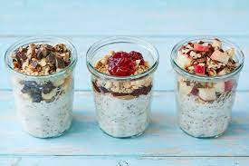

Easy Overnight Oats Recipe

Description
Looking for a make-ahead breakfast that’ll keep you full until lunch? Try overnight oats with yogurt!
Ingredients
- Milk: Use cow’s milk, oat milk, almond milk, or whatever milk alternative you prefer.
- Yogurt: Greek yogurt lends richness, flavor, and lots of protein to help you take on the day.
- Oats: Make sure to use rolled oats.
- Honey: Honey lends subtle sweetness.
- Chia seeds: Fiber-rich chia seeds add flavor and nutrition.
- Cinnamon: Enhance the overall flavor with ground cinnamon.
- Berries: Though this recipe calls for blueberries, you can use almost any fruit. Bananas, peaches, or any variety of berries work best.
Steps
- Combine all the ingredients (besides the fruit) in a jar, seal, and shake.
- Open the jar and fold in the fruit.
- Seal the jar and refrigerate overnight.